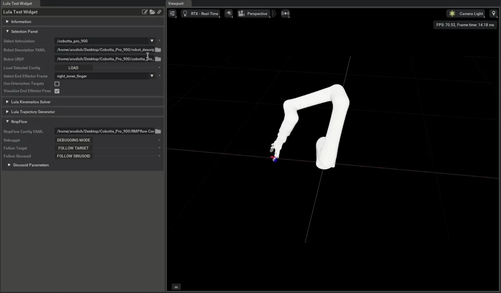

Configuring RMPflow for a New Manipulator#
이 튜토리얼에서는 Robot Description File 생성에 따라 RMPflow 알고리즘을 완전히 구성하는 방법을 배웁니다.
Getting Started#
Prerequisites
RmpFlow 사용에 필요한 두 구성 파일 중 하나를 만들기 위해 Lula Robot Description and XRDF Editor 튜토리얼을 완료하세요.
로봇 Articulation USD 에셋을 얻기 위해 이 튜토리얼을 시작하기 전에 Tutorial 7: Configure a Manipulator를 검토하세요.
이 튜토리얼은 Cobotta Pro 900 로봇을 설명하는 URDF 파일과 USD 파일을 제공합니다. USD 파일은 Tutorial 6: Setup a Manipulator에서 논의된 과정을 사용하여 URDF에서 생성되었습니다.
Content Browser의 다음 경로에서 튜토리얼 에셋을 여세요: Isaac Sim/Samples/Rigging/Cobotta_Pro_900_Assets
Using the Lula Test Widget#
이 튜토리얼은 Lula Test Widget을 사용하여 새로운 로봇에서 RMPflow를 구성하고 테스트하는 방법을 보여줍니다. Lula Test Widget은 Extensions 메뉴에서 활성화할 수 있는 익스텐션으로 아래와 같이 Tools > Robotics > Lula Test Widget에서 접근할 수 있습니다.
이 익스텐션을 사용하면 USD 스테이지에서 선택된 로봇 Articulation과 함께 RMPflow 구성 파일을 선택하고 RMPflow가 의도한 대로 작동하는지 확인하는 시나리오를 실행할 수 있습니다. 각 유형의 필수 구성 파일이 생성된 후 Lula Test Widget에서 로드하여 사용할 수 있습니다.
Template RmpFlow Config File#
로봇을 설명하고 RMPflow 알고리즘을 매개변수화하는 세 가지 파일이 있습니다:
- 로봇 기구학 지정에 사용되는 URDF(universal robot description file)
관절 및 링크 이름. 각 관절의 위치 한계도 필요합니다. URDF의 다른 속성은 무시되고 생략할 수 있습니다. 여기에는 질량, 관성 모멘트, 시각 및 충돌 메시가 포함됩니다.
YAML 형식의 보조 로봇 설명 파일. 이 파일은 Lula Robot Description Editor UI 도구를 사용하여 생성할 수 있습니다.
모든 활성화된 RMP의 매개변수를 포함하는 YAML 형식의 RMPflow 구성 파일.
이 튜토리얼은 로봇을 설명하는 URDF 파일로 시작하고 Lula Robot Description and XRDF Editor를 사용하여 Robot Description File을 만들었다고 가정합니다. 이 튜토리얼에서는 나머지 RMPflow 구성에 대한 템플릿 파일이 제공되며, Cobotta Pro 900 로봇에 맞게 수정됩니다. 튜토리얼 에셋에는 Cobotta Pro 900에 대한 완성된 robot_description.yaml이 포함되어 있습니다.
Template RmpFlow Config YAML File#
RMPflow 알고리즘에는 50개 이상의 설정 가능한 매개변수가 있지만, 이 매개변수들은 유사한 기구학적 구조와 길이 스케일을 가진 로봇들 사이에서 일반화되는 경향이 있습니다. 템플릿의 값은 Franka Emika Panda에 맞게 특별히 튜닝되었지만 많은 6 및 7 DOF 로봇 팔의 좋은 시작점이 됩니다. 템플릿 파일은 튜토리얼 에셋에서 rmpflow_configs/template_rmpflow_config.yaml로 찾을 수 있습니다.
1# Artificially limit the robot joints. For example:
2# A joint with range +-pi would be limited to +-(pi-.01)
3joint_limit_buffers: [.01, .01, .01, .01, .01, .01, .01]
4
5# RMPflow has many modifiable parameters, but these serve as a great start.
6# Most parameters will not need to be modified
7rmp_params:
8 cspace_target_rmp:
9 metric_scalar: 50.
10 position_gain: 100.
11 damping_gain: 50.
12 robust_position_term_thresh: .5
13 inertia: 1.
14 cspace_trajectory_rmp:
15 p_gain: 100.
16 d_gain: 10.
17 ff_gain: .25
18 weight: 50.
19 cspace_affine_rmp:
20 final_handover_time_std_dev: .25
21 weight: 2000.
22 joint_limit_rmp:
23 metric_scalar: 1000.
24 metric_length_scale: .01
25 metric_exploder_eps: 1e-3
26 metric_velocity_gate_length_scale: .01
27 accel_damper_gain: 200.
28 accel_potential_gain: 1.
29 accel_potential_exploder_length_scale: .1
30 accel_potential_exploder_eps: 1e-2
31 joint_velocity_cap_rmp:
32 max_velocity: 4.
33 velocity_damping_region: 1.5
34 damping_gain: 1000.0
35 metric_weight: 100.
36 target_rmp:
37 accel_p_gain: 30.
38 accel_d_gain: 85.
39 accel_norm_eps: .075
40 metric_alpha_length_scale: .05
41 min_metric_alpha: .01
42 max_metric_scalar: 10000
43 min_metric_scalar: 2500
44 proximity_metric_boost_scalar: 20.
45 proximity_metric_boost_length_scale: .02
46 xi_estimator_gate_std_dev: 20000.
47 accept_user_weights: false
48 axis_target_rmp:
49 accel_p_gain: 210.
50 accel_d_gain: 60.
51 metric_scalar: 10
52 proximity_metric_boost_scalar: 3000.
53 proximity_metric_boost_length_scale: .08
54 xi_estimator_gate_std_dev: 20000.
55 accept_user_weights: false
56 collision_rmp:
57 damping_gain: 50.
58 damping_std_dev: .04
59 damping_robustness_eps: 1e-2
60 damping_velocity_gate_length_scale: .01
61 repulsion_gain: 800.
62 repulsion_std_dev: .01
63 metric_modulation_radius: .5
64 metric_scalar: 10000.
65 metric_exploder_std_dev: .02
66 metric_exploder_eps: .001
67 damping_rmp:
68 accel_d_gain: 30.
69 metric_scalar: 50.
70 inertia: 100.
71
72canonical_resolve:
73 max_acceleration_norm: 50.
74 projection_tolerance: .01
75 verbose: false
76
77
78# body_cylinders are used to promote self-collision avoidance between the robot and its base
79# The example below defines the robot base to be a capsule defined by the absolute coordinates pt1 and pt2.
80# The semantic name provided for each body_cylinder does not need to be present in the robot URDF.
81body_cylinders:
82 - name: base
83 pt1: [0,0,.333]
84 pt2: [0,0,0.]
85 radius: .05
86
87
88# body_collision_controllers defines spheres located at specified frames in the robot URDF
89# These spheres will not be allowed to collide with the capsules enumerated under body_cylinders
90# By design, most frames in industrial robots are kinematically unable to collide with the robot base.
91# It is often only necessary to define body_collision_controllers near the end effector
92body_collision_controllers:
93 - name: end_effector
94 radius: .05
이 튜토리얼은 이 파일의 세 가지 필드에 집중합니다:
joint_limit_buffers는 로봇 URDF에 명시된 관절 한계 주변에 인공 관절 한계를 도입합니다. 제공된joint_limit_buffers의 형태는robot_description.yaml파일에 주어진 c-공간과 일치해야 합니다. 템플릿 로봇이 7개의 회전 관절을 가진다고 상상하면, 7개의 c-공간 관절에 .01의 버퍼는 RMPflow가 로봇 URDF에 주어진 관절 한계에서 .01 라디안까지 로봇을 구동한다는 것을 의미합니다. 로봇에 프리즘 관절이 있으면 .01 값은 미터로 암묵적으로 표현됩니다.body_cylinders와body_collision_controllers는 RMPflow가 엔드 이펙터와 로봇 베이스 사이의 자기 충돌을 피하는 데 도움이 됩니다.body_cylinders는 캡슐 세트를 사용하여 가상의 로봇 베이스를 정의합니다.body_collision_controllers는 로봇 URDF의 다양한 프레임에 배치된 충돌 구를 정의합니다. 위의 템플릿 코드는 절대 좌표에서 움직이지 않는 캡슐과 로봇 URDF의 "end_effector" 프레임 주변에 중심을 둔 구를 정의합니다. RMPflow는 구와 캡슐 사이의 충돌을 허용하지 않습니다.
엔드 이펙터가 베이스와 충돌하는 것을 방지하는 것 외에 RMPflow는 충돌 지오메트리를 기반으로 자기 충돌을 직접 회피하지 않습니다.
그러나 대부분의 응용 프로그램에서 관절 한계는 기구학적 체인 중간의 링크가 서로 충돌하는 것을 방지하기에 충분합니다.
Modifying the Template for the Cobotta Pro 900#
Doing the Bare Minimum#
Cobotta가 RMPflow를 사용하여 목표를 따를 수 있도록 하는 데 필요한 최소 변경 사항.
rmpflow_config 파일은 시작하는 데 거의 작업이 필요하지 않습니다(rmpflow_configs/rmpflow_config_basic.yaml는 튜토리얼 에셋에 있음):
1# Artificially limit the robot joints. For example:
2# A joint with range +-pi would be limited to +-(pi-.01)
3joint_limit_buffers: [.01, .01, .01, .01, .01, .01]
4
5#Omitting `rmp_params` argument
6
7# body_cylinders are used to promote self-collision avoidance between the robot and its base
8# The example below defines the robot base to be a capsule defined by the absolute coordinates pt1 and pt2.
9# The semantic name provided for each body_cylinder does not need to be present in the robot URDF.
10body_cylinders:
11 - name: base
12 pt1: [0,0,.333]
13 pt2: [0,0,0.]
14 radius: .05
15
16
17# body_collision_controllers defines spheres located at specified frames in the robot URDF
18# These spheres will not be allowed to collide with the capsules enumerated under body_cylinders
19# By design, most frames in industrial robots are kinematically unable to collide with the robot base.
20# It is often only necessary to define body_collision_controllers near the end effector
21body_collision_controllers:
22 - name: right_inner_finger
23 radius: .05
로봇을 움직이게 하려면 지금은 rmp_params 인수를 무시할 수 있습니다. 템플릿에 나열된 7개 대신 로봇이 6개의 DOF만 가진다는 것을 나타내도록 joint_limit_buffers 인수를 수정하세요. body_cylinders를 제공해야 하므로 나중에 로봇 베이스를 표현할 것입니다. 기본 body_collision_controllers 인수에 한 가지 변경이 필요했는데, 충돌 구를 배치하는 프레임을 변경하는 것이었습니다. Cobotta URDF에는 end_effector 프레임이 없으므로 지금은 엔드 이펙터 근처의 프레임을 선택하세요: right_inner_finger.
Lula Test Widget에서 로봇이 목표를 따르고 장애물을 피할 수 있음을 확인하세요. RMPflow가 목표 위치로 이동하는 프레임이 그리퍼 중심에 있지 않음을 주목하세요. Lula Test Widget에서 right_inner_finger가 엔드 이펙터 프레임으로 선택됩니다. 사용 가능한 엔드 이펙터 프레임은 로봇 URDF 파일에서 가져오며, 그리퍼 중심에 있는 프레임이 없습니다.
Avoiding Self-Collision: Configuring Body Cylinders and Body Collision Controllers#
완성된 Robot Description File로 로봇은 외부 장애물과의 충돌을 피하지만 자기 충돌은 피하지 못합니다. 산업용 로봇 팔은 일반적으로 관절 한계로 자기 충돌의 대부분의 가능성을 제거하기 때문에 자기 충돌 회피를 위한 도구가 제한적입니다. 그러나 어떤 유형의 자기 충돌이 가능한지 알아보기 위해 특정 로봇에 대한 탐색이 필요합니다. body cylinders 및 body collision controllers의 예비 구성으로 Cobotta_Pro_900_Assets/rmpflow_configs/cobotta_rmpflow_config_basic.yaml 파일에 설정하면 로봇 엔드 이펙터와 로봇 베이스 사이의 충돌을 쉽게 일으킬 수 있습니다.
body_cylinders는 캡슐 세트를 사용하여 가상의 로봇 베이스를 정의합니다. body_collision_controllers는 로봇 URDF의 다양한 프레임에 배치된 충돌 구를 정의합니다.
RMPflow는 이 구와 캡슐이 서로 접촉하는 것을 허용하지 않습니다. 기본 rmpflow 구성에서 절대 좌표([0,0,0], [0,0,.333])에서 반경 .05 m의 두 구를 연결하는 캡슐로 베이스를 정의했으며(Doing the Bare Minimum 참조), right_inner_finger 프레임에 단일 body_collision_controller를 정의했습니다.
위의 영상에서 그리퍼가 로봇 베이스를 직접 통과하지 않지만, 로봇 베이스의 가장자리나 두 번째 링크의 베이스에서 자기 충돌을 쉽게 일으킬 수 있음을 확인할 수 있습니다.
RMPflow에서 사용 가능한 자기 충돌 도구는 허용 가능한 로봇 구성을 희생하지 않고 모든 자기 충돌을 피할 수 없습니다.
Cobotta에서 자기 충돌을 완전히 불가능하게 하려면 로봇 베이스의 매우 보수적인 추정이 필요합니다. 그리퍼가 베이스 근처로 전혀 이동하지 못하게 해야 합니다. 최적의 구성 선택은 사용 사례에 따라 다릅니다. 로봇이 자기 충돌을 일으키는 것을 관찰하지 않는 한 로봇 베이스 주변의 기동성을 제한할 이유가 없습니다.
이 튜토리얼의 하나의 잠재적 구성은 그리퍼의 다른 프레임을 커버하고 그리퍼가 로봇의 두 번째 링크와 교차하기 더 어렵도록 로봇 베이스 크기를 과장합니다. 캡슐과 구의 크기와 위치는 이미 추가한 충돌 구를 기반으로 합니다.
1# body_cylinders are used to promote self-collision avoidance between the robot and its base
2# The example below defines the robot base to be a capsule defined by the absolute coordinates pt1 and pt2.
3# The semantic name provided for each body_cylinder does not need to be present in the robot URDF.
4body_cylinders:
5 - name: base
6 pt1: [0,0,.12]
7 pt2: [0,0,0.]
8 radius: .08
9 - name: second_link
10 pt1: [0,0,.12]
11 pt2: [0,0,.12]
12 radius: .16
13
14
15# body_collision_controllers defines spheres located at specified frames in the robot URDF
16# These spheres will not be allowed to collide with the capsules enumerated under body_cylinders
17# By design, most frames in industrial robots are kinematically unable to collide with the robot base.
18# It is often only necessary to define body_collision_controllers near the end effector
19body_collision_controllers:
20 - name: J5
21 radius: .05
22 - name: J6
23 radius: .05
24 - name: right_inner_finger
25 radius: .02
26 - name: left_inner_finger
27 radius: .02
28 - name: right_inner_knuckle
29 radius: .02
30 - name: left_inner_knuckle
31 radius: .02
로봇 베이스 링크 "J1"을 반경 .08 m의 캡슐로 표현하는데, 이는 로봇 베이스 근처의 충돌 구 크기와 일치합니다. 로봇의 두 번째 링크는 반경 .12의 큰 구로 표현합니다. Lula Test Widget에서 로봇이 첫 번째와 두 번째 링크와의 충돌 회피를 훨씬 더 잘 수행함을 확인할 수 있습니다. 예상대로 여전히 자기 충돌을 일으킬 수 있지만 경우가 훨씬 제한됩니다.
Creating an End Effector Frame#
선택된 엔드 이펙터 프레임 right_inner_finger가 로봇 그리퍼의 위치를 직접 표현하지 않음을 확인하세요. RMPflow가 엔드 이펙터로 간주하는 프레임은 로봇 URDF에 있어야 합니다. 이 튜토리얼에서는 로봇 끝 근처의 프레임을 최선의 옵션으로 선택했습니다. 그리퍼 중심이 어디에 있는지 직접 제어하려면 두 가지 옵션이 있습니다:
런타임에 원하는 목표와 RMPflow에 전송하는 목표 사이의 변환을 수동으로 계산하기.
로봇의 URDF에 프레임 추가하기.
이 튜토리얼은 Cobotta Pro 900 URDF에 프레임을 추가하는 두 번째 옵션을 다룹니다. 일반적으로 엔드 이펙터 위치는 그리퍼 중심에 있으며 두 개의 주축이 그리퍼 손가락과 정렬됩니다.
Cobotta Pro 900 URDF를 조사하면 "right_inner_finger" 프레임이 로봇 팔에 어떻게 연결되어 있는지 확인할 수 있습니다. URDF에서 "right_inner_finger" 관절은 그리퍼 베이스에 있는 "onrobot_rg6_base_link" 프레임의 손자 관절입니다.
1<joint name="right_inner_finger_joint" type="revolute">
2 <origin rpy="0 0 0" xyz="0 -0.047334999999999995 0.064495"/>
3 <parent link="right_outer_knuckle"/>
4 <child link="right_inner_finger"/>
5 <axis xyz="1 0 0"/>
6 <limit effort="1000" lower="-0.872665" upper="0.872665" velocity="2.0"/>
7 <mimic joint="finger_joint" multiplier="1" offset="0"/>
8 </joint>
9
10<joint name="right_outer_knuckle_joint" type="revolute">
11 <origin rpy="0 0 3.141592653589793" xyz="0 0.024112 0.136813"/>
12 <parent link="onrobot_rg6_base_link"/>
13 <child link="right_outer_knuckle"/>
14 <axis xyz="1 0 0"/>
15 <limit effort="1000" lower="-0.628319" upper="0.628319" velocity="2.0"/>
16 <mimic joint="finger_joint" multiplier="-1" offset="0"/>
17 </joint>
이는 "right_inner_finger_joint"와 "left_inner_finger_joint"와 정렬된 그리퍼 중심의 포인트를 표현하기 위해 "onrobot_rg6_base_link" 프레임에서 순수 Z 오프셋 .064495+.136813=.2013만큼 오프셋된 프레임을 만들 수 있음을 알려줍니다. 손가락 끝 쪽으로 더 가까이 가려면 Z 오프셋을 .24로 늘리세요.
URDF에 "gripper_center"라는 링크를 추가하는데, 부모 링크 "onrobot_rg6_base_link"로부터의 오프셋은 "gripper_center_joint" 연결로 정의됩니다. 튜토리얼 파일에서 수정된 URDF는 ./cobotta_pro_900_gripper_frame.urdf로 저장됩니다.
1<link name="gripper_center"/>
2 <joint name="gripper_center_joint" type="fixed">
3 <origin rpy="0 0 0" xyz="0.0 0.0 .24"/>
4 <parent link="onrobot_rg6_base_link"/>
5 <child link="gripper_center"/>
6 </joint>
영상에서 목표의 Z축이 그리퍼 중심을 따라 있고 목표의 Y축이 그리퍼 평면과 정렬되어 있음을 확인할 수 있습니다.
이 영상은 제공된 구성 파일 세 개를 사용합니다:
./robot_description.yaml
./cobotta_pro_900_gripper_frame.urdf
./rmpflow_configs/cobotta_rmpflow_config_basic.yaml

Modifying RMPflow Parameters#
수정해야 할 RMPflow 구성 파일의 나머지 부분은 rmpflow_config.yaml의 the RMPflow 매개변수입니다. 일반적으로 템플릿에서 매개변수를 많이 수정할 필요가 없습니다. RMPflow 항목은 유사한 스케일의 로봇에 잘 작동합니다. 템플릿 RMPflow 구성은 Franka Emika Panda 로봇을 기반으로 튜닝되었습니다.
로봇별 RMPflow 매개변수가 하나 있는데, joint_velocity_cap_rmp입니다. 이 항목은 지정된 구성 공간의 모든 관절에 대해 RMPflow에서 허용하는 최대 속도에 한계를 설정합니다. URDF를 조사하면 Cobotta Pro 900의 각 관절에 1 rad/s의 속도 한계가 있음을 확인할 수 있습니다.
1<joint name="joint_6" type="revolute">
2 <parent link="J5"/>
3 <child link="J6"/>
4 <origin rpy="0.000000 0.000000 0.000000" xyz="0.000000 0.120000 0.160000"/>
5 <axis xyz="-0.000000 -0.000000 1.000000"/>
6 <limit effort="1" lower="-6.28318530717959" upper="6.28318530717959" velocity="1"/>
7 <dynamics damping="0" friction="0"/>
8 </joint>
RMPflow가 이 관절 속도 한계를 준수하도록 하려면 관절이 1 rad/sec 한계에서 .3 rad/s 이내에 올 때 RMPflow가 관절 속도를 감속하도록 템플릿 매개변수를 수정할 수 있습니다:
1joint_velocity_cap_rmp:
2 max_velocity: 1.
3 velocity_damping_region: .3
4 damping_gain: 1000.0
5 metric_weight: 100.
Note
제공된 Cobotta Pro 900 USD 파일의 PD 게인은 Franka Emika Panda에 선택한 P=10000 N*m, D=1000 N*m*s의 PD 게인을 기반으로 합니다. max_velocity joint_velocity_cap_rmp 항목을 1 rad/sec로 줄였을 때 Cobotta Pro 900에서 진동이 발생했습니다. 이 튜토리얼에서 Cobotta 로봇에 제공된 USD는 비례 게인 10000 N*m, 댐핑 게인 10000 N*m*s를 가집니다.
각 RMPflow 매개변수의 의미와 새로운 로봇에 대한 RMPflow 매개변수를 개선하는 방법에 대한 자세한 내용은 RMPflow Tuning Guide를 참조하세요.
Summary#
이 튜토리얼은 Lula Robot Description Editor 튜토리얼을 기반으로 새로운 로봇에 RMPflow를 구성하는 과정을 완성합니다. 튜토리얼에서 수행한 작업:
특정 로봇에 맞게 템플릿 rmpflow_config.yaml 파일 수정.
자기 충돌 회피 동작 튜닝.
RMPflow에서 사용할 수 있는 새로운 엔드 이펙터 프레임 생성.
Further Learning#
NVIDIA Isaac Sim에서 RmpFlow의 구조와 사용 동기를 이해하려면 Motion Generation 페이지를 참조하세요.